Sei qui
Largo di Torre Argentina
Via di S. Nicola de' Cesarini, 5
Colazione, pranzo, aperitivo e cena · dehors sulla piazza
Aperto tutti i giorni
Roma
Largo di Torre Argentina
In Vino Veritas
Vino, cucina romana e cocktail sulla piazza dove cadde Cesare. Dal cappuccino delle sette e mezza all'ultimo calice di mezzanotte.
Dalle sette e mezza a mezzanotte la carta cambia con l'ora. Ti mostriamo quella di adesso: tocca un momento per vedere le altre.
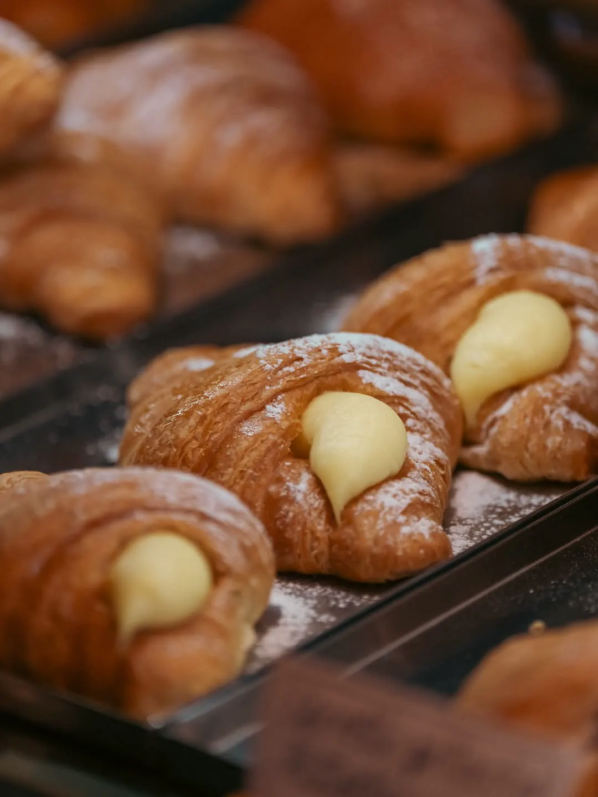
Carta dimostrativa: piatti, prezzi e allergeni andranno sostituiti con quelli reali della sala. Allergeni secondo il Reg. UE 1169/2011; chiedi sempre al personale.
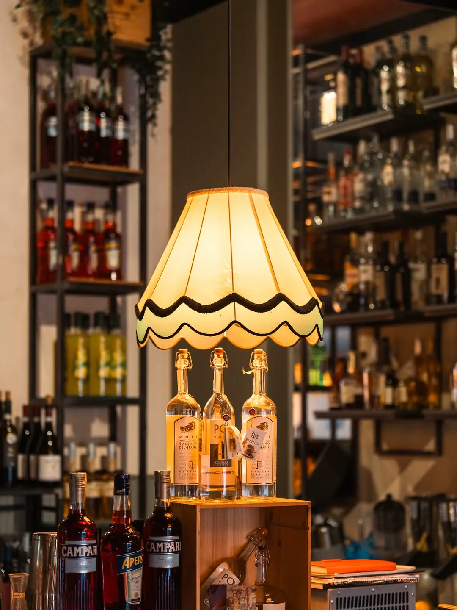
Sotto la piazza, qualche metro più in basso, ci sono quattro templi dell'età repubblicana e i resti della Curia di Pompeo: il luogo dove, alle Idi di marzo, fu ucciso Giulio Cesare. Tra le rovine vive da decenni la colonia di gatti più famosa di Roma.
Su questo angolo, sotto la lampada d'epoca, c'è il nostro bancone: un caffè al volo la mattina, un tavolo nel dehors la sera.
La nostra carta dei vini si legge come un viaggio in treno: parte da Roma e arriva ovunque. Chiedi al sommelier da dove vuoi partire.
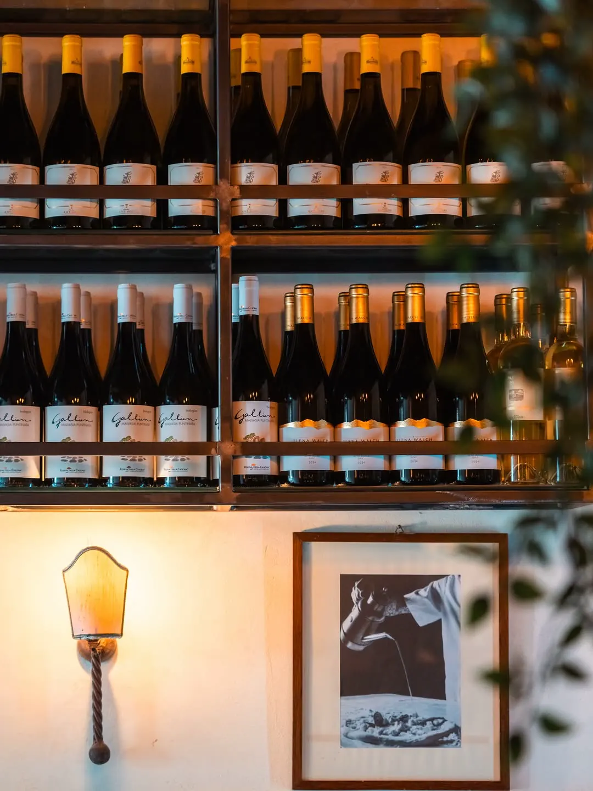
120rossi90bianchi45bollicine45dolci e rosatiNumeri indicativi
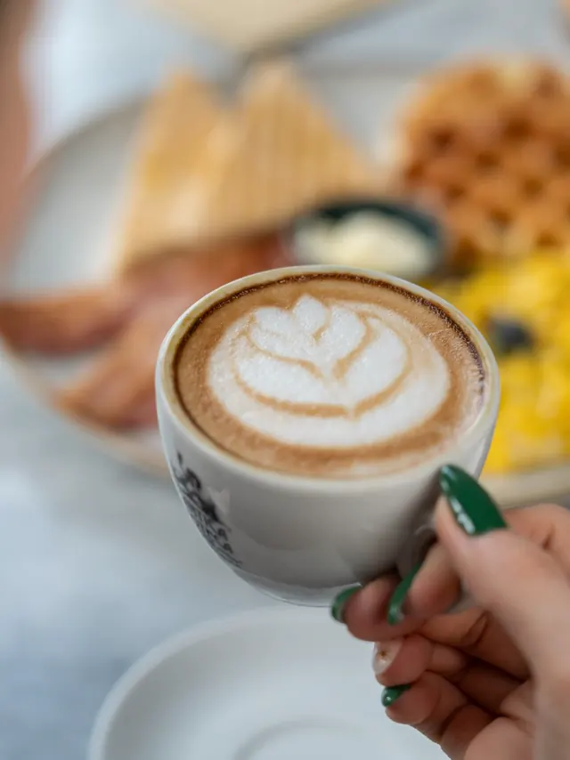
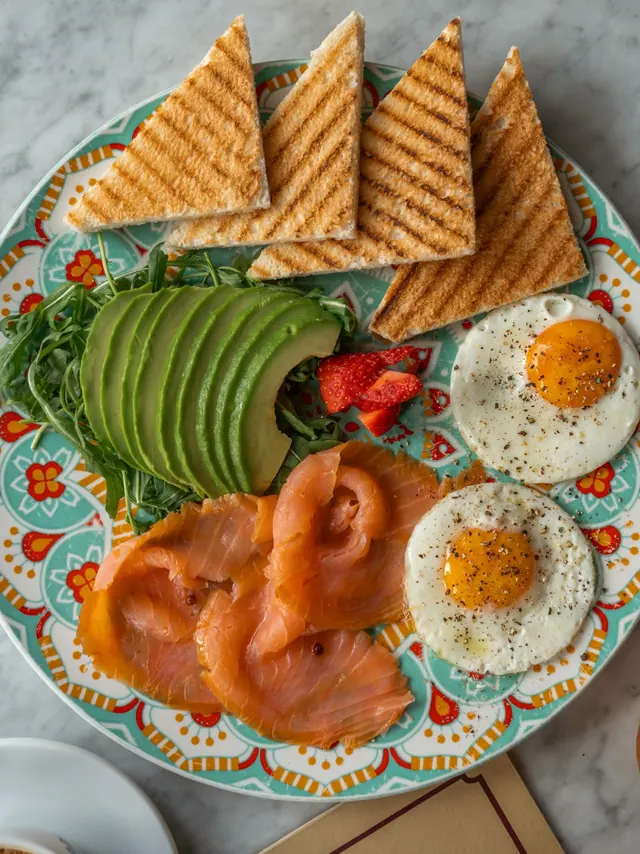
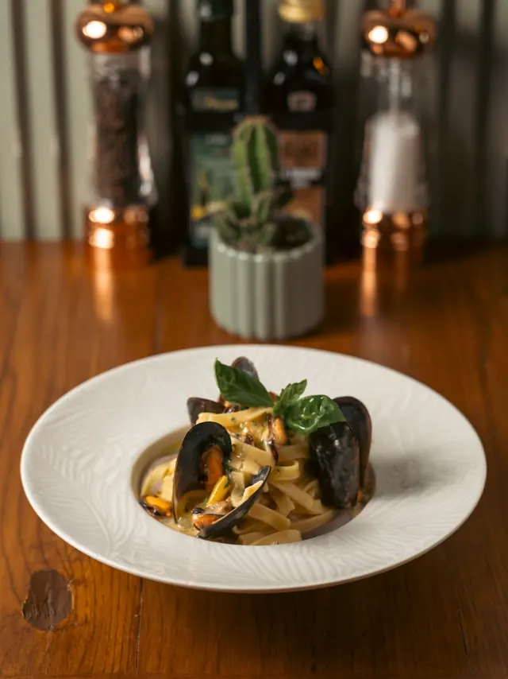
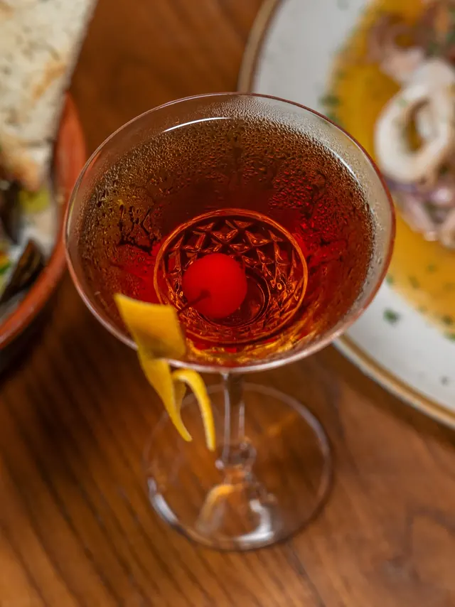
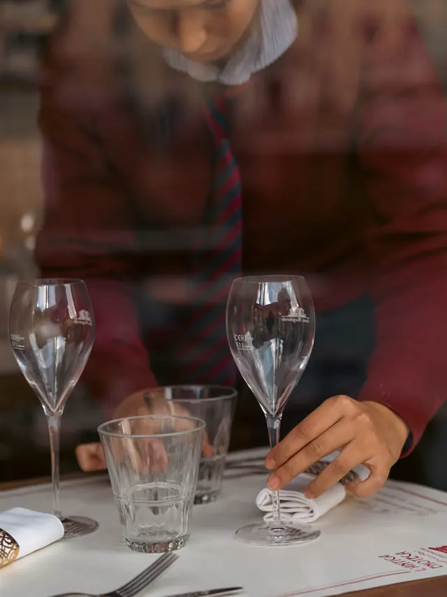
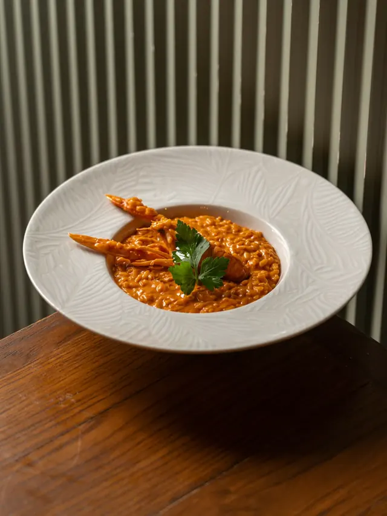
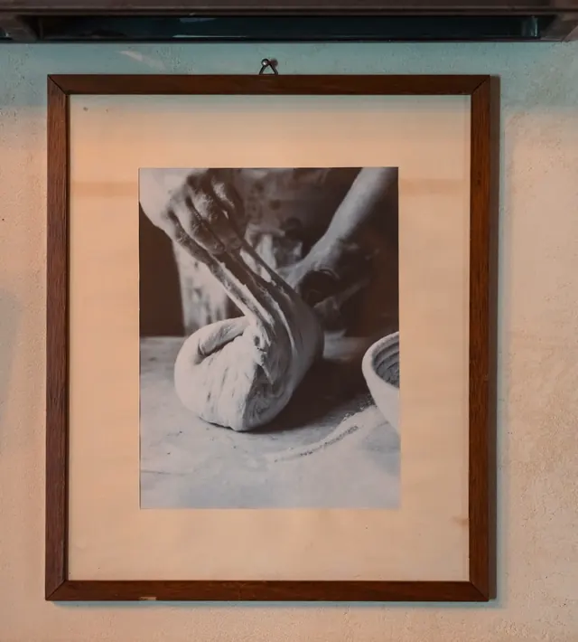
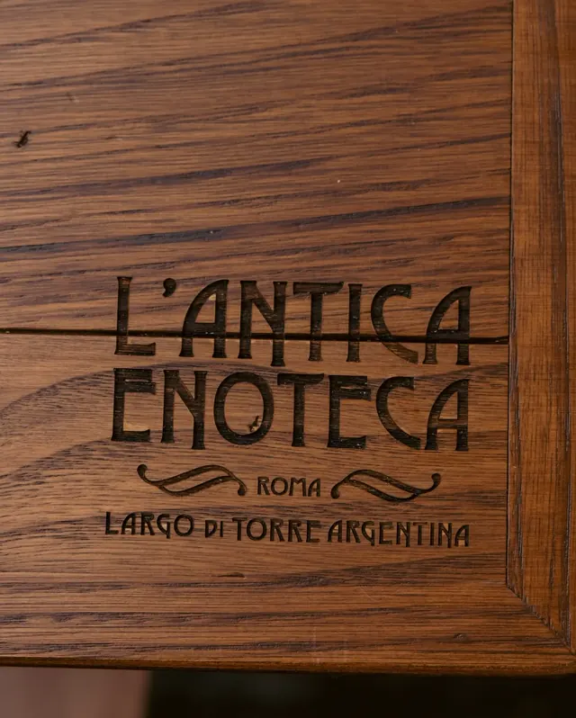
«Carbonara da manuale, vino della casa onesto, posizione da cartolina. Quando vengo a Roma è il primo posto su cui mi siedo.»
«Carta dei vini con personalità: ti sanno consigliare anche se non ne sai niente. Il saltimbocca vale il viaggio.»
«Cena fuori, i gatti di Largo Argentina che ti girano intorno, una buona bottiglia. Roma fa così. Tornerò.»
«Servizio attento senza essere invadente. Il pecorino del tagliere ti fa capire perché vale il prezzo. La sera meglio prenotare.»
Recensioni di esempio: nella versione definitiva qui andranno citazioni reali dalla scheda Google, con il consenso degli autori.
La nostra storia comincia in via della Croce, in una delle enoteche più antiche di Roma. A Largo Argentina l'abbiamo portata sulla piazza.
Sei qui
Via di S. Nicola de' Cesarini, 5
Colazione, pranzo, aperitivo e cena · dehors sulla piazza
La sede storica · dal Settecento
Via della Croce, 76b · a due passi da piazza di Spagna
Il bancone antico, le sale affrescate, la vasca di marmo dove riposavano le anfore
Il dehors si riempie in fretta, soprattutto nel weekend. Una telefonata, due minuti, e il posto è tuo.
06 6945 2178| Lunedì – sabato | 7:30 – 24:00 |
| Domenica | 9:00 – 24:00 |